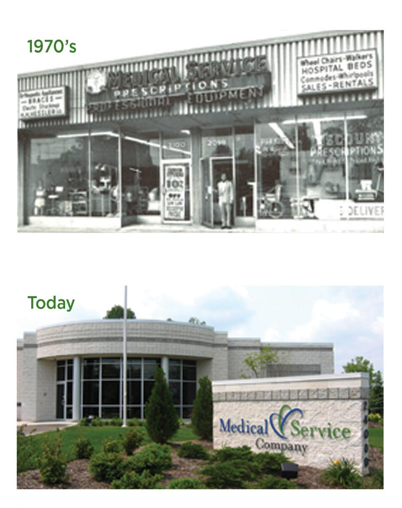

Medical Serveices
About Us
In 1950, Merle and Jean Marx started Medical Service Company (MSC) in a small office in Cleveland, OH as a Pharmacy and Medical Equipment Supplier. Since then, we have grown our size, focus and impact. We now have hundreds of dedicated team members that care for thousands of patients in cities and states across the Midwest and Northeast.

In our 70+ years of providing home medical equipment and supplies, we’ve established ourselves as a company that cares. We have survived and thrived by providing the optimal equipment, service and care, delivered with compassion and integrity.
Today, Medical Service Company is a Post-Acute Healthcare Provider that specializes in Chronic-Respiratory Disease Management. This is done through Training and Education, Clinical Pathways and Patient Engagement. As a proud third-generation family owned and operated business, MSC has a strong pledge to excellence. This is evidenced by numerous accolades such as:
- Preferred Partnerships with Statewide Health Insurance Providers
- Preferred Partnerships with Health Systems
- Recognized as a Top Workplace in Northeast Ohio